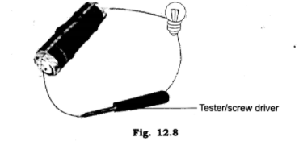
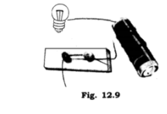
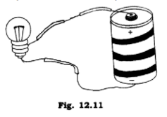

all ex and ques/ans is avlable in wedsite of ncert
1. Fill in the blanks:
(a) A device that is used to break an electric circuit is called_______________
(b) An electric cell has___________
Ans:
(a) switch
(b) two
2. Mark ‘True’ or ‘False’ for the following statements:
(a) Electric current can flow through metals.
(b) Instead of metal wires, a jute string can be used to make a circuit.
(c) Electric current can pass through a sheet of thermocol.
Ans:
(a) True
(b) False
(c) False.
3.Explain why the bulb would not glow in the arrangement shown in fig
Ans: The bulb would not glow in the arrangement shown in figure because the one end of tester/screw driver is made up of plastic which does not allow the electric current to flow through it.
4. Complete the drawing shown in Fig. 12.9 to indicate where the free ends of the two wires should be joined to make the bulb glow.
Ans:



5. What is the purpose of using an electric switch? Name some electrical gadgets that have switches built into them.
Ans: Electric switch is used to make electric circuit open or closed for a particular appliance and hence with the help of a switch we can use an appliance according
6. Would the bulb glow after completing the circuit shown in Fig. 12.9 if instead of safety pin we use an eraser?
Ans: No, since eraser is an insulator so it does not allow the current to pass. Hence the bulb will not glow.
7. Would the bulb glow in the circuit shown in Fig. 12.11.
Ans: Yes, the electric circuit is closed so the bulb will glow.
8. Using the“conduction tester” on an object it was found that the bulb begins to glow. Is that object a conductor or an insulator? Explain.
Ans: Yes, if the object is good conductor of electricity then current will pass through conduction tester and the bulb will glow. Hence the object will be a conductor of electricity.
9. Why should an electrician use rubber gloves while repairing an electric switch at your home? Explain.
Ans: Our body is good conductor of electricity and rubber is insulator. During repairing work if the body comes in contact with current carrying wire then there will not be any accident as rubber does not allow the passage of current through it. Hence electrician uses rubber gloves while repairing an electric switch.
10. The handles of the tools like screwdrivers and pliers used by electricians for repair work usually have plastic or rubber covers on them. Can you explain why?
Ans: Plastic or rubber is an insulator which does not allow electric current to pass through it. The handles of the tools like screwdrivers and pliers used by electricians for repair have covering of plastic or rubber so that electric current may not pass through these tools to the body of the electrician to harm him.